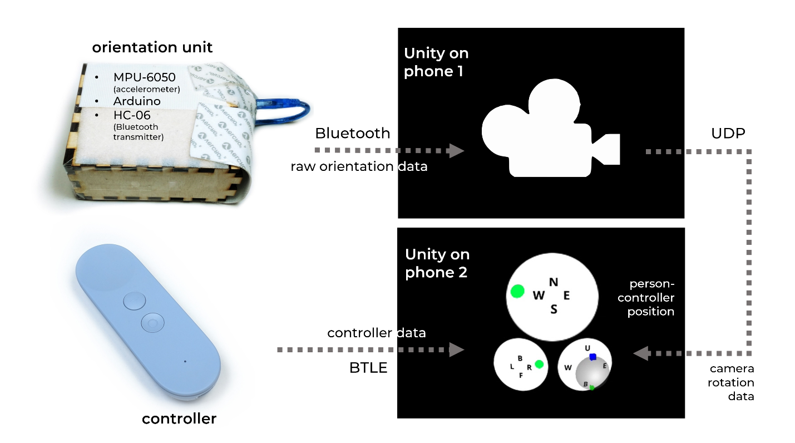

When I was a college freshman, one of the first things I wondered if I could do was:
How can I turn myself into a sphere?
In high school, I would think about ideas like this constantly because being a human seemed limiting in so many ways.
Now that I was in college and had the freedom to explore weird ideas, I found an advisor (Golan Levin), got some money (from CMU's SURG/CrossWalk and the STUDIO of Inquiry's FRFAF grant), and acquired this huge Zorb ball:
This ball was about ten feet across and was not easy to lug around!
My hope was to start by transforming the body the person experienced. Here is my friend inside the aforementioned sphere-body:
Her body should move as one with the ball. Yet the Zorb's ball's existing straps were not good enough for the job. You can see her wearing a bunch of extra stuff which I added--belts, broken-up floatie tubes, carabiners, a neck rest, and of course, duct tape. Here's what all that equipment would look like if it was laid out, arranged roughly according to where each component would be placed relative to the body.
My friend should control her new sphere-body as if it was her own. To do this, she would direct a group of people outside to push her in the desired direction.
In my friend's hand was a tiny controller she could touch to indicate which way she wanted to go. The controller communicated through Bluetooth to the phone the girl circled in blue was carrying. Here is what the phone told the girl:
- Top: from which place the people should push--north, south, east, west, which were predefined in the space.
- Bottom left: which way the person wanted to go--forward, backward, left, right.
- Bottom right: the current orientation of the ball. The blue indicator was the position of the accelerometer, currently right on top of the ball. The green indicator was the position of the person, right on the bottom of the ball.
The bottom two bits of information were combined to derive the top bit of information that the girl would see and then use to direct the others.
I think it would have been neat if the ball could be rolled automatically. But from the way it seemed at the time, that would be super expensive to build.
This approach had kinesthetic limitations I struggled to minimize. My friend was not weightless like a sphere might be--she could still feel gravity. She was still aware of her hand as she interact with the remote controller. In previous experiments, she would get a sore neck, which was why I got a neck-rest for her. But despite all these issues, my friend could finally move as a sphere.
Not only did I imagine that the person should move like a sphere--they should experience the world of a sphere too. I used virtual reality (VR) technology to do this: my friend wore a Google Daydream VR headset for the visual experience. She also wore earphones for the audio experience.
Her perception of the world should change as she moved. Below you can see how I implemented the full pipeline for motion and audiovisual data. The accelerometer's data would first be read by one phone, which would compute the camera view in the virtual space. This phone would then send data to the second phone about the orientation of the ball, and using data from the controller, would indicate how the ball should be moved as explained above.

I thought a lot about what the sphere-person should experience. The general idea was that they should feel as if they lived among other spheres. Here are some examples of what I came up with in Unity.
Below was one of the first ideas. A landscape in white that maybe the spheres could live in:

I didn't like it too much because the space was too much like human-space.
So naturally, it got weirder.
Here are spheres that would replicate and change the color-pattern on their faces based on interaction with their neighbors. The balls had a kind of "personality" and might change color to suit other balls they had more "affinity" for.
I personally think this result looks fun. The background was created from a fractal generator called Mandlebulb3D.
I also made this black hole to suck shapes:
Here's a particle system that created dynamic creatures. The creatures would arise from force interactions between the particles over time. I think it's pretty neat that such nice forms were generated, because I certainly did not expect them:
Here it is twirling around:

And another:

I definitely stayed up too late for several nights playing around with this.
Then I started thinking more about the concept of what the person was seeing. While replicating spheres and dynamic creatures were pretty cool, they didn't feel right.
So I created a sense for what sort of interactions should take place between the spheres.
You can see there were two general interactions I came up with. First, was that spheres could be peers in the same space. Second, was that spheres could enter each other so that the other contained them. This was to capture the idea that individuals are like worlds because their mind or what they imagine is the world to that person. For another person to "come in and see" their world was what I felt empathy should be.
With these ideas in mind, I imagined that the spheres should look minimalistic, as minimalistic as the spheres in the above diagrams. I messed around with a lot of graphic shader tricks for several weeks. I had to ask a lot of people for help to get the result I desired, despite the simplicity of the idea.
Here's the result.
But the experience felt too abstract. I then experimented with the idea that spheres coming together could be as intimate as the flesh:
This still didn't satisfy me. I experimented for several weeks more, until on the day I was meant to present my project, I came up with the experience I was finally looking for.
I felt that in this imagined place, one would experience both empathy and peace. Finally, a person could feel, could see, my imagination of a sphere in a different world.
It took me half a year of coding, reading, drawing, asking people, running around with a huge ball, pulling all-nighters, and self-searching to get all of this done. It was tough, both technically and conceptually. Like I said before, it wasn't perfect. But I worked super hard on this in the first year of my time at college because I knew I was really lucky that I had the chance to do this. There were so many people that helped me. Twelve volunteers for testing the movement of the ball. Others who taught me new ideas, like Andy Lomas's cell generation work. Some who helped me understand how to use Unity and C#, or gave me tricks to make different kinds of shaders, or let me sneak into a locked classroom to use the soldering equipment. There were those who maintained the huge space I used. Those who pointed me to this person and that person to talk next and were absolutely pleasant despite all my odd questions (A big ball you say? To roll people in?). A lawyer who guided me in presenting materials for the Institutional Review Board (IRB) for the protection of human subjects used in my project. And most of all, my friends and parents for all the support they gave me when I told them what crazy idea I was spending so much of my heart on.